La crypto et l'argent, en pratique
سواد مالی و کریپتو، کاربردیComment fonctionnent les blockchains, comment vérifier un token avant d'y toucher et comment se protéger des arnaques.

با هم صنعت، شرکتها و فضای کسبوکار ایران را بهتر میشناسیم و رمزارز و فناوری مالی را به زبان ساده یاد میگیریم.
Apprendre · Relier · Évoluer
Photo :عکس: Amir PashaeiCC BY-SA 4.0


Le bitcoin repasse sous 60 000 dollars, les ETF perdent de l'argent et la peur est à 11. Trois scénarios pour la semaine à venir et le seul rapport qui compte.
بیتکوین دوباره زیر ۶۰ هزار دلار است، ETFها پول از دست میدهند و ترس روی ۱۱ است. سه سناریو برای هفتهی آینده.
Lire l'histoire

Les médicaments amaigrissants déplacent l'argent des snacks et des pizzas vers les protéines, les vêtements et la santé. Quelle est l'ampleur des dégâts, où sont les nouveaux marchés et où se situe l'Iran ?
داروهای لاغری پول را از چیپس و پیتزا به پروتئین، پوشاک و سلامت میبرند. آسیب چقدر است، بازار تازه کجاست و ایران کجا ایستاده؟
Lire l'histoire

Circle et Paribu signent un protocole d'accord : comment fonctionne le dollar numérique, la leçon de la Turquie après 85 % d'inflation, la place de l'Iran et les emplois à venir.
تفاهمنامهی Circle و Paribu: سازوکار دلار دیجیتال، درس ترکیه از تورم ۸۵ درصدی، جایگاه ایران و فرصتهای شغلی.
Lire l'histoire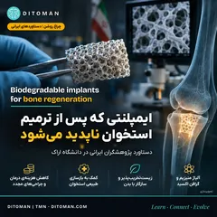
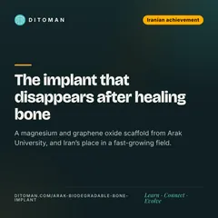
L'échafaudage osseux en magnésium et oxyde de graphène de l'université d'Arak : résultats de laboratoire, comment l'Allemagne et la Corée sont arrivées sur le marché, la 5e place de l'Iran dans le domaine et la route vers le bloc opératoire.
داربست منیزیم و گرافن اکسید دانشگاه اراک: نتایج آزمایشگاهی، تجربهی آلمان و کره، رتبهی پنجم ایران و راه تا اتاق عمل.
Lire l'histoire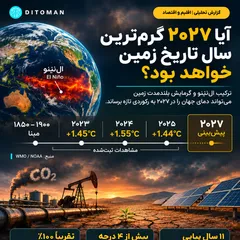
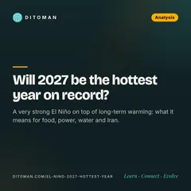
Un El Niño très fort, ajouté au réchauffement de long terme, pourrait faire de 2027 une année record. Ce que cela signifie pour les prix alimentaires, l'électricité, l'eau et l'Iran.
النینوی بسیار قوی روی گرمایش بلندمدت ممکن است ۲۰۲۷ را سال رکورد کند. اثرش بر قیمت غذا، برق، آب و ایران.
Lire l'histoire

La Russie, l'Arabie saoudite et l'Australie sont les plus grands exportateurs de CO2 de l'histoire ; l'Iran est cinquième. L'argent, les emplois, le droit et pourquoi les règles climatiques actuelles en tiennent à peine compte.
روسیه، عربستان و استرالیا بزرگترین صادرکنندگان کربن تاریخاند و ایران پنجم. پول، شغل، قانون و اینکه چرا قوانین فعلی تقریباً آن را حساب نمیکنند.
Lire l'histoire

Comment fonctionnent les chèques numériques, la feuille de route de la banque centrale vers 80 % d'électronique, les leçons de Hong Kong, Singapour, l'Inde et le Royaume-Uni, et comment les utiliser en sécurité.
چک دیجیتال چطور کار میکند، نقشهی راه بانک مرکزی تا سهم ۸۰ درصدی، تجربهی هنگکنگ، سنگاپور، هند و بریتانیا و راهنمای استفادهی امن.
Lire l'histoire

De la première centrale de 6,6 kW de Mechhed à 396 TWh par an : histoire, capacité, réseau, sanctions, environnement, avenir, et 40 ans comparés à 15 voisins.
از نیروگاه ۶٫۶ کیلوواتی مشهد تا ۳۹۶ میلیارد کیلوواتساعت: تاریخچه، ظرفیت، شبکه، تحریم، محیط زیست، آینده و مقایسه با ۱۵ همسایه.
Lire l'histoire

Un outil de test de sécurité utilisé dans de vraies attaques contre des banques sud-coréennes : ce que le FBI, CrowdStrike et Check Point ont confirmé, ce qui reste non prouvé, et que faire.
ابزار آزمایش امنیت که در حملهی واقعی به بانکهای کره به کار رفت: آنچه FBI و CrowdStrike تأیید کردهاند، آنچه هنوز ثابت نشده و چه باید کرد.
Lire l'histoire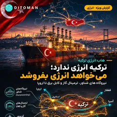
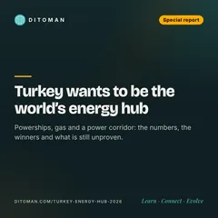
Un pays qui importe 95 % de son gaz prévoit des navires-centrales, du GNL et un corridor électrique. Les chiffres, les gagnants, les inquiets et ce qui reste à prouver.
کشوری که ۹۵٪ گازش وارداتی است، با نیروگاه شناور، LNG و کریدور برق میخواهد هاب شود. ارقام، برندگان، نگرانیها و آنچه هنوز ثابت نشده.
Lire l'histoire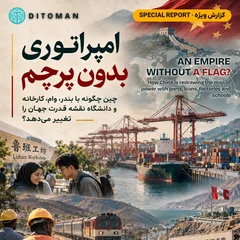

La Chine il y a 40 ans, il y a 20 ans et aujourd'hui : 3 400 milliards de dollars investis à l'étranger, 168 ports dans 90 pays, prêts, compétences, et la comparaison avec le Royaume-Uni, la France, les États-Unis et le Japon.
چین ۴۰ سال پیش، ۲۰ سال پیش و امروز: ۳٫۴ تریلیون دلار سرمایهگذاری خارجی، ۱۶۸ بندر در ۹۰ کشور، وام، مهارت و مقایسه با بریتانیا، فرانسه، آمریکا و ژاپن.
Lire l'histoire

Dix grands médias en ligne iraniens comparés : histoire, argent, audience, le réseau national pendant la coupure, IA et lecteurs à l'étranger.
ده رسانه از نُه زاویه: تاریخچه، پول، مخاطب، شبکهی ملی در روزهای قطع اینترنت، هوش مصنوعی و خوانندهی خارج از ایران.
Lire l'histoire

Pourquoi la crypto a chuté avec la tech et l'or : la Fed, les valeurs de l'IA, les sorties des ETF et la géopolitique, avec des scénarios à une semaine, quatre semaines et six mois.
چرا کریپتو همزمان با سهام فناوری و طلا ریخت؛ با سناریوهای مثبت و منفی برای یک هفته، چهار هفته و شش ماه.
Lire l'histoire

Daniel Chidiac sur la rumination, les limites et l'autosabotage, et pourquoi un espace entre l'événement et la réaction compte dans les décisions d'argent.
کتاب دنیل چیدیاک دربارهی بیشفکری، مرزبندی و خودتخریبی؛ و اینکه چرا فاصلهی بین اتفاق و واکنش در پول هم مهم است.
Lire l'histoire

Le livre de 2016 de Peter Zeihan sur le schiste et un monde sans l'Amérique pour gendarme, avec un bilan de ses prévisions.
کتاب پیتر زایهان دربارهی انقلاب شیل و جهانی بدون پلیس آمریکا، با کارنامهی پیشبینیهایش تا امروز.
Lire l'histoire

Où vivent les Iraniens et pourquoi : un siècle de carte démographique, l'eau, les infrastructures et les 20 prochaines années.
مردم ایران کجا زندگی میکنند و چرا: صد سال نقشهی جمعیت، نقش آب، زیرساختها و ۲۰ سال آینده.
Lire l'histoire

Un panel mené par un Nobel soutient la preuve d'existence de Yang-Mills d'OpenAI ; le gap de masse et le prix d'un million de dollars restent ouverts.
تأیید اثبات هوش مصنوعی برای وجود نظریهی یانگ–میلز؛ شکاف جرمی و جایزهی یک میلیون دلاری هنوز باز است.
Lire l'histoire

L'accord de géothermie surchauffée Google–Quaise, un siècle d'histoire, les pays leaders, le marché et le potentiel de l'Iran.
قرارداد گوگل و Quaise، فناوری زمینگرمایی فوقداغ، تاریخچه، بازار و ظرفیت ایران از مشکینشهر تا دماوند.
Lire l'histoire

Ce que testent les Émirats, sa place en Iran, comment cela protège les sols et quelles entreprises iraniennes le font déjà.
آزمایشهای امارات، کاربرد در مناطق خشک ایران، حفاظت از خاک و شرکتهای ایرانی فعال در کشت هوشمند.
Lire l'histoire
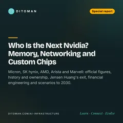
Micron, SK hynix, AMD, Arista et Marvell : chiffres officiels, actionnariat, la sortie de Jensen Huang et scénarios jusqu'en 2030.
مایکرون، اسکی هاینیکس، AMD، آریستا و مارول: ارقام رسمی به دلار و تومان، مالکیت، کنارهگیری جنسن هوانگ و سناریوها.
Lire l'histoire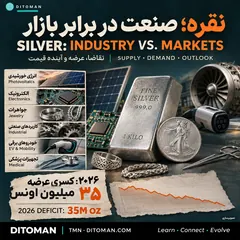

Industrie contre marchés : usages, le déficit, le record et le krach de 2026, l'or et les autres métaux, et les perspectives.
صنعت در برابر بازار: کاربردها، کسری بازار، رکورد و سقوط ۲۰۲۶، مقایسه با طلا و چشمانداز آینده.
Lire l'histoire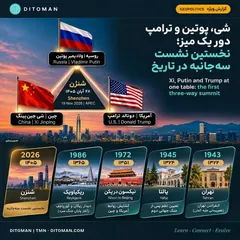

De Téhéran 1943 et Yalta à Shenzhen : histoire, nucléaire, enjeux politiques, économiques et de civilisation, l'Iran et les scénarios à venir.
از تهران ۱۹۴۳ و یالتا تا شنژن: تاریخ، ابعاد هستهای، سیاسی، اقتصادی و تمدنی، جایگاه ایران و سناریوهای پیش رو.
Lire l'histoire
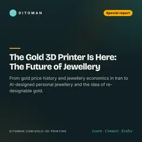
Comment on fabrique la poudre d'or, les machines et leurs prix, l'économie de la bijouterie en Iran et l'idée d'un or redessinable.
پودر طلا چطور ساخته میشود، دستگاهها و قیمتها، اقتصاد جواهر در ایران و ایدهی طلای قابلبازطراحی.
Lire l'histoire

Imprimantes 3D +86 %, batteries +30 %, robots +26 %, alors que les ventes au détail n'ont progressé que de 0,4 % : ce que cela signifie pour le monde et pour l'Iran.
چاپگر سهبعدی ۸۶٪، باتری ۳۰٪، ربات ۲۶٪؛ در حالی که خردهفروشی فقط ۰٫۴٪ رشد کرد.
Lire l'histoire

Un liant de batterie à base de plantes et d'eau : le marché, les émissions, la santé, les prix, de nouvelles entreprises et l'opportunité pour l'Iran.
چسب باتری از گیاه و آب: بازار، گازهای گلخانهای، سلامت، قیمت، کسبوکارهای تازه و فرصت ایران.
Lire l'histoire

Miroirs en orbite, calculs énergétiques, usage des sols, inquiétude des astronomes et quatre scénarios d'avenir.
آینههای فضایی، حساب انرژی، کاربری زمین، نگرانی اخترشناسان و چهار سناریو برای آینده.
Lire l'histoire
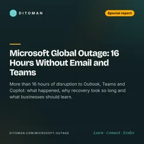
Ce qui s'est passé, qui a été touché, pourquoi le rétablissement a été si long, alertes aux arnaques et comment les entreprises peuvent être moins exposées.
چه اتفاقی افتاد، چه کسانی آسیب دیدند، چرا بازیابی طول کشید، هشدار کلاهبرداری و درسها برای کسبوکارها.
Lire l'histoire
Auracast à Francfort, Munich et Brighton, le marché mondial, l'IA, les entreprises, les normes et l'opportunité pour l'Iran.
Auracast در فرانکفورت، مونیخ و برایتون، بازار جهانی، هوش مصنوعی، شرکتها، استانداردها و فرصت صنعت صوت ایران.
Lire l'histoire
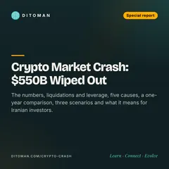
Liquidations, effet de levier, cinq causes, une comparaison sur un an, trois scénarios et ce que cela signifie pour les investisseurs iraniens.
لیکوئیدیشن و اهرم، پنج دلیل سقوط، مقایسه با یک سال پیش، سه سناریوی آینده و اثر بر سرمایهگذار ایرانی.
Lire l'histoire

Comment l'IA réduit le coût de lancer une petite entreprise en Iran : marketing, contenu, comptabilité, juridique, paperasse, service client et export, avec un plan sur 30 jours.
هوش مصنوعی در بازاریابی، محتوا، حسابداری، امور حقوقی، مدارک، خدمات مشتری و صادرات؛ با حسابوکتاب واقعی و برنامهی ۳۰ روزه.
Lire l'histoire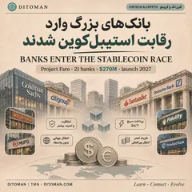
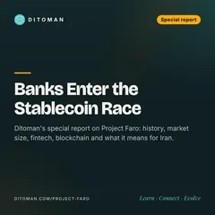
21 banques mondiales engagent environ 270 millions de dollars dans le projet Faro : l'histoire, le marché de 295 milliards, la fintech, la blockchain et ce que cela signifie pour l'Iran.
۲۱ بانک بزرگ جهان با حدود ۲۷۰ میلیون دلار وارد بازار استیبلکوین شدند: تاریخچه، بازار ۲۹۵ میلیارد دلاری، فینتک، بلاکچین و معنای آن برای ایران.
Lire l'histoire

United a interdit aux agents d'IA d'acheter des billets : les raisons officielles, le « pas de nouvel intermédiaire » du PDG, l'argent d'une industrie de 1 165 milliards de dollars et ce que cela signifie pour l'Iran.
یونایتد خرید بلیت با هوش مصنوعی را ممنوع کرد: دلایل رسمی، «واسطهی تازه نمیخواهم»، اعداد صنعت ۱٫۱۶۵ تریلیون دلاری و فرصتها برای ایران.
Lire l'histoire

L'Europe représente la moitié des dépenses sociales mondiales et sa dette augmente : qui paie, pourquoi l'Europe n'est pas une seule histoire et les opportunités qu'elle ouvre pour la région.
اروپا نیمی از هزینهی اجتماعی جهان را خرج میکند: چه کسی میپردازد، چرا همهی اروپا یکی نیست و چه فرصتهایی برای منطقه ساخته میشود.
Lire l'histoire

Une inflation à deux chiffres pendant 46 ans sur 50 : pourquoi ceux qui commencent tard partent de plus loin, pourquoi ce n'est pas leur faute et ce qui reste entre nos mains.
تورم دو رقمی در ۴۶ سال از ۵۰ سال: چرا دیر رسیدن گران است، چرا تقصیر تو نیست و چه چیزی هنوز در اختیار ماست.
Lire l'histoire
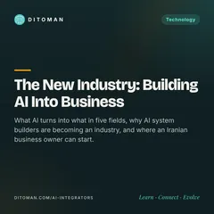
Ce que l'IA transforme en quoi dans cinq domaines, pourquoi les bâtisseurs de systèmes d'IA deviennent une industrie, et par où un chef d'entreprise peut commencer.
هوش مصنوعی در پنج حوزه چه چیزی را به چه تبدیل میکند و یک تاجر یا کارخانهدار ایرانی از کجا شروع کند.
Lire l'histoire

Le CO₂ fossile devrait reculer de 0,4 % en 2026 tandis que le solaire et l'éolien atteignent 17,3 % de l'électricité mondiale. Trente ans de données et 3 400 milliards de dollars d'investissements.
انتشار کربن فسیلی در ۲۰۲۶ کم میشود و خورشید و باد به ۱۷٫۳٪ برق جهان رسیدهاند؛ سی سال داده و ۳٫۴ تریلیون دلار سرمایهگذاری.
Lire l'histoire

Les adultes achètent désormais un jouet sur cinq. Cinquante ans de jouets, pourquoi les enfants en veulent toujours et la chance de l'Iran de devenir un pôle régional du jouet.
بزرگسالها حالا یکپنجم خریداران اسباببازیاند؛ ۵۰ سال تاریخ اسباببازی و فرصت ایران در بازار منطقه.
Lire l'histoire

Suse, Rey et Hamadan font partie de dix cités antiques restées habitées et ayant gardé leur nom, et elles relient l'Iran à la Syrie et au Liban.
شوش، ری و همدان در میان ده شهر کهنیاند که هزاران سال مسکونی ماندهاند و نامشان را نگه داشتهاند.
Lire l'histoire

40 % des enfants britanniques se tournent vers l'IA pour des conseils d'argent : ce qu'ils demandent, la justesse des réponses et la place de l'Iran et de ses voisins.
۴۰٪ بچههای بریتانیایی سؤال پولی را از هوش مصنوعی میپرسند: چه میپرسند، جوابها چقدر درست است و ایران و همسایهها کجا هستند.
Lire l'histoire

L'économie désignait autrefois la tenue d'un foyer : comment les familles vivent réellement l'économie, le budget des ménages iraniens en chiffres et les savoir-faire qui les aident à s'en sortir.
اقتصاد از اول یعنی ادارهی خانه: دخل و خرج خانوار ایرانی با عدد و مهارتهایی که خانوادهها با آن از پس زندگی برمیآیند.
Lire l'histoire
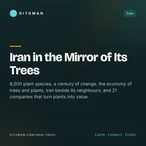
8 112 espèces végétales, un siècle de changement, l'économie des arbres et des plantes, l'Iran à côté de ses voisins et 21 entreprises.
۸٬۱۱۲ گونهی گیاهی، صد سال تغییر، اقتصاد درخت و گیاه، مقایسه با همسایهها و ۲۱ شرکت.
Lire l'histoire

65 % des 18–29 ans s'informent d'abord en ligne, 2,5 % lisent souvent la presse papier, et l'économie est la rubrique la plus lue.
۶۵٪ جوانها خبر را اول آنلاین میگیرند، ۲٫۵٪ اغلب روزنامهی کاغذی میخوانند و اقتصاد پرخوانندهترین صفحه است.
Lire l'histoire

Le parc automobile iranien, cinquante ans de fabrication et d'importation, et la comparaison avec la Turquie, la Russie, le Pakistan, l'Arabie saoudite et l'Irak.
ناوگان ایران، ۵۰ سال تولید و واردات، و مقایسه با ترکیه، روسیه، پاکستان، عربستان و عراق.
Lire l'histoire

Un réacteur de polymérisation de 40 mètres construit à Chiraz pour un complexe pétrochimique à Asalouyeh, et les entreprises derrière lui.
راکتور پلیمریزاسیون ۴۰ متری ساخت شیراز برای عسلویه، و شرکتهایی که پشت آناند.
Lire l'histoire

Cinquante ans de construction en chiffres : près de six fois plus de logements, 52 000 unités industrielles, sixième producteur mondial de ciment.
۵۰ سال ساختن با عدد: خانهها نزدیک ۶ برابر، ۵۲ هزار واحد صنعتی، ششمِ جهان در سیمان.
Lire l'histoire

France, Taïwan, Corée du Sud et Japon : ce qui est confirmé, ce qui ne l'est pas et pourquoi les tiers sont le maillon faible.
فرانسه، تایوان، کره و ژاپن: چه تأیید شده، چه نه، و چرا شرکتهای همکار حلقهی ضعیفاند.
Lire l'histoire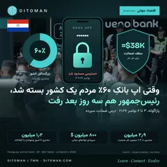

Une banque numérique de 2,9 millions de clients a été mise sous tutelle, le président écarté, et ce que couvrent vraiment les garanties des dépôts.
بانکی با ۲٫۹ میلیون مشتری بسته شد و رئیسجمهور برکنار شد؛ ضمانت سپرده واقعاً چه چیزی را پوشش میدهد؟
Lire l'histoire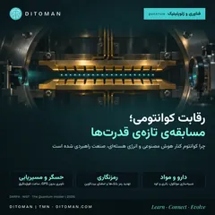

Qui est dans la course, pourquoi le quantique se range avec l'IA et le nucléaire, et ce que cela signifie pour le chiffrement et Bitcoin.
چه کشورهایی در این مسابقهاند و چه اثری بر رمزنگاری و بیتکوین دارد.
Lire l'histoire

The Economist affirme que l'IA a dopé le piratage. Les preuves, les alertes et ce que les défenseurs doivent faire.
شواهد، هشدارها و کاری که مدافعان باید بکنند.
Lire l'histoire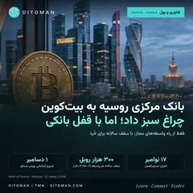

Bitcoin, Ether et USDT pour les particuliers uniquement via des intermédiaires agréés, avec un plafond de 300 000 roubles.
سه رمزارز برای مردم عادی، فقط از راه واسطههای مجاز و با سقف سالانه.
Lire l'histoire

Pourquoi des producteurs paient parfois pour vendre de l'électricité, et pourquoi votre facture ne devient pas négative.
چرا تولیدکننده برای فروش برق پول میدهد و چرا قبض تو منفی نمیشود.
Lire l'histoire

Une fraude de 129 millions de dollars qui aurait utilisé des voix et des visages clonés, et trois règles pour vous protéger.
پروندهی ۱۲۹ میلیون دلاری با جعل صدا و تصویر، و سه قانون ساده برای محافظت.
Lire l'histoire

Un robot chirurgical iranien : ce qui est documenté et ce qui relève encore de l'affirmation du fabricant.
از دانشگاه تا اتاق عمل؛ آنچه مستند است و آنچه هنوز ادعای سازنده است.
Lire l'histoire

Un système iranien de tri par IA rencontre un commerce d'exportation centenaire.
سامانهی هوشمند غربالگری آفلاتوکسین و جایگاه پستهی ایران در جهان.
Lire l'histoire
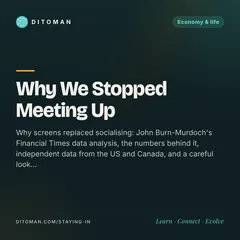
Sortir a augmenté de 20 % de plus que l'inflation, et pourtant les rencontres gratuites ont aussi reculé.
گرانی تنها مقصر نیست؛ حتی دورهمی رایگان هم کم شد.
Lire l'histoire

Un seul gisement à Yazd contient à peu près autant de zinc que toutes les réserves du Pérou.
ذخیرهای در دل کویر یزد، هماندازهی ذخایر روی کشور پرو.
Lire l'histoire

Un catalyseur EO fabriqué en Iran fait désormais tourner l'unité de glycol de Morvarid Petrochemical à pleine capacité.
کاتالیست ایرانی EO، واحد گلایکول پتروشیمی مروارید را با ظرفیت کامل میچرخاند.
Lire l'histoire

Comment CinnaGen a obtenu l'autorisation de mise sur le marché de l'UE pour Zandoriah.
داستان مجوز اروپایی داروی زاندوریا، ساخت سیناژن.
Lire l'histoire

Ce qu'il peut faire, qui peut l'utiliser et ce que les Iraniens peuvent en apprendre.
چه میکند، چه کسانی از آن استفاده میکنند و چه درسی برای ما دارد.
Lire l'histoire۳۰ درس کوتاه و دوزبانه، قدمبهقدم: از پول و تورم تا بانک، بلاکچین و هوش مصنوعی.30 leçons courtes, pas à pas : de la monnaie et de l'inflation aux banques, à la blockchain et à l'IA.
Une règle éditoriale permanente pour les trois : savoir réel et réussites réelles, sans commentaire politique d'aucun bord.
Comment fonctionnent les blockchains, comment vérifier un token avant d'y toucher et comment se protéger des arnaques.
Une analyse honnête des changements à venir, lue depuis là où se trouve vraiment notre public.
Documenter ce que des Iraniens et des entreprises iraniennes ont construit, avec une source pour chaque chiffre.
Une carte structurée de ce qui est fabriqué, extrait, transporté et vu en Iran : six branches, leurs sous-branches officielles, les entreprises de premier plan et une source pour chaque chiffre.


Histoire, produits, direction et chiffres, secteur par secteur, avec une source pour chaque chiffre.
Boutique d'applications Android pour persanophones ; plus de 500 000 applications
فروشگاه برنامهی اندروید برای فارسیزبانان؛ بیش از ۵۰۰ هزار برنامه
Voir l'enregistrementMédicaments biosimilaires, réactifs de laboratoire et protéines recombinantes
داروهای زیستیمشابه، معرفهای آزمایشگاهی و پروتئینهای نوترکیب
Voir l'enregistrementCommerce en ligne iranien ; depuis 2006
بزرگترین فروشگاه اینترنتی ایران؛ از ۲۰۰۶
Voir l'enregistrementConception ASIC, SoC et FPGA ; le microprocesseur Aristo 32 bits
طراحی تراشهی ASIC، SoC و FPGA؛ ریزپردازندهی ۳۲ بیتی آریستو
Voir l'enregistrementSystème chirurgical robotisé Sina
سامانهی جراحی رباتیک سینا
Voir l'enregistrementVTC à prix fixes ; lancé en février 2014
درخواست خودرو؛ قیمت از پیش مشخص؛ آغاز فوریهی ۲۰۱۴
Voir l'enregistrementPapier kraft et semi-kraft, carton ondulé et caisses, carton ; zone industrielle de Yazd
کاغذ کرافت و سمیکرافت، ورق و کارتن کنگرهای، مقوا؛ شهرک صنعتی یزد
Voir l'enregistrement
L'un des plus grands producteurs d'éthylène et de polyéthylène d'Iran, à Asaluyeh, qui exporte plus de 70 % de sa production
یکی از بزرگترین تولیدکنندگان اتیلن و پلیاتیلن ایران در عسلویه؛ بیش از ۷۰٪ محصول برای صادرات
Voir l'enregistrementPanneaux et profilés en MDF revêtu, panneaux muraux en PVC, pierre artificielle, dalles de plafond ; zone franche d'Anzali, Gilan
ورق و پروفیل امدیاف روکشدار، دیوارپوش پیویسی، سنگ مصنوعی و تایل سقفی؛ منطقه آزاد انزلی، گیلان
Voir l'enregistrementMédicaments à base de plantes, cosmétiques, produits alimentaires et huiles essentielles ; Kashan, Ispahan (usine près de Qamsar)
داروی گیاهی، آرایشی و غذایی بر پایهی گیاهان دارویی؛ اسانس؛ کاشان، اصفهان (کارخانه نزدیک قمصر)
Voir l'enregistrementPâte et papier ; Gilan
خمیر کاغذ و کاغذ؛ گیلان
Voir l'enregistrementEau de rose, distillats de plantes, sirops naturels et herbes séchées ; zone industrielle Amirkabir 1, Kashan
گلاب، عرقیات گیاهی، شربت طبیعی و گیاهان دارویی خشک؛ شهرک صنعتی امیرکبیر ۱، کاشان
Voir l'enregistrement«بیسوادان قرن بیستویکم کسانی نیستند که نمیتوانند بخوانند؛ کسانیاند که نمیتوانند یاد بگیرند، از یاد ببرند و دوباره یاد بگیرند.»
« Les illettrés du XXIe siècle ne seront pas ceux qui ne savent ni lire ni écrire, mais ceux qui ne savent pas apprendre, désapprendre et réapprendre. »
Ditoman tire son nom du toman, le nom courant de la monnaie iranienne : un « toman numérique ». TMN a été déployé sur BNB Smart Chain en février 2022 avec une question en tête : le savoir lui-même peut-il porter une valeur réelle ?
Pendant près de quatre ans, nous sommes restés délibérément discrets. Pas de marketing, pas de vente de tokens, pas de lancement. Cet historique est sur la chaîne, vérifiable par tous, et c'est le signe le plus clair que rien n'a été conçu pour une flambée rapide.
Leçons courtes par thème, d'environ cinq minutes chacune, dans les deux langues, chacune se terminant par un quiz.


Monnaies numériques de banque centrale et monnaie programmable : ce qui est réel, ce qui est exagéré et où en est le rial numérique iranien.
Lire la leçonLeçons, brèves explications de l'actualité et mises à jour, en persan et en anglais. Pas de signaux, pas de battage.
TMN est le token BEP-20 derrière Ditoman, prévu pour reconnaître l'apprentissage et la contribution réels. Ce n'est pas un produit d'investissement et nous ne demandons à personne d'en acheter.
Plusieurs tokens sans lien utilisent le ticker TMN. Voici le seul contrat officiel :
0x86a56e59f22Eaf3867EEeB41fB9BfA81BacE790d
نقطهضعفها را هم مینویسیم، چون درس بررسی توکن یاد میدهد دنبالشان بگردی.
Des phases, pas des dates. Nous rendons compte des progrès honnêtement, y compris de ce qui n'a pas marché.
Contrat vérifié, propriété abandonnée, environ 20 % de l'offre hors circulation, leçons bilingues publiées, livre blanc finalisé.
Une communauté Telegram avec de vraies règles, des leçons de départ et un accueil clair, avant toute invitation.
29 oct. 2026 : toute la liquidité TMN/BNB du portefeuille principal du projet verrouillée jusqu'au 29 oct. 2027. Vérifier le verrouillage · Ce que cela signifie
۷ آبان ۱۴۰۵: همهی لیکوئیدیتی TMN/BNB کیفپول اصلی پروژه تا ۷ آبان ۱۴۰۶ قفل شد.
Arrivée dans les communautés crypto et de la diaspora en persan, et premier retrait public d'offre avec preuve.
Lisez dix leçons, réussissez un test de dix questions et recevez 500 000 TMN, pour les 1 000 premiers. Commencez ici.
ده درس را بخوان، در آزمون دهسؤالی قبول شو و ۵۰۰٬۰۰۰ TMN بگیر؛ برای ۱٬۰۰۰ نفر اول. از اینجا شروع کن.
Un projet éducatif bilingue fondé sur trois piliers : culture pratique de la crypto et de la finance, analyse honnête de l'IA, de l'énergie et de l'avenir du travail, et couverture des réussites réelles de personnes et d'entreprises iraniennes.
از کسی نمیخواهیم بخرد. عرضهی TMN متمرکز است. صفحهی TMN را بخوان و با همان معیارهایی بسنجش که هر توکن دیگری را میسنجی.
Non. Ditoman est un projet éducatif. Rien ici n'est un conseil en investissement, et les leçons sont conçues pour vous aider à décider par vous-même.
C'est une règle éditoriale permanente. Nous documentons le savoir réel et les réussites réelles, et restons à l'écart du commentaire politique, de quelque bord que ce soit.
Oui. Le pilote « apprendre et gagner » est ouvert : lisez dix leçons, réussissez un test de dix questions et recevez 500 000 TMN, pour les 1 000 premiers. Commencez ici.
بله. طرح «یاد بگیر، توکن بگیر» باز است: ده درس را بخوان، در آزمون دهسؤالی قبول شو و ۵۰۰٬۰۰۰ TMN بگیر؛ برای ۱٬۰۰۰ نفر اول. از اینجا شروع کن.
Un document fixe le cap. Lisez-le avant de vous fier à quoi que ce soit que nous disons.
گزارشها، آموزشها و روایتهای امیدبخش، هر روز در کانالهای دیتومان.